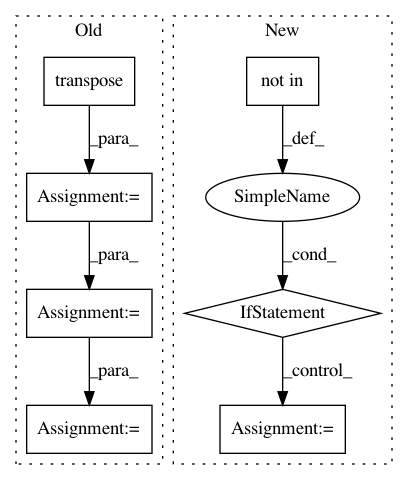

0d39c9dc19388c18362897c83cebbe12a063a752,trixi/logger/file/pytorchplotfilelogger.py,PytorchPlotFileLogger,show_image_grid_heatmap,#PytorchPlotFileLogger#Any#Any#Any#Any#Any#Any#Any#Any#Any#Any#,262
Before Change
map_ = np.clip(map_grid * 255, a_min=0, a_max=255)
map_ = map_.astype(np.uint8)
map_ = cv2.applyColorMap(map_.transpose(1, 2, 0), colormap=colormap)
map_ = cv2.cvtColor(map_, cv2.COLOR_BGR2RGB)
map_ = map_.transpose(2, 0, 1)
fuse_img = map_
if background is not None:
After Change
if image_args is None:
image_args = {}
if "normalize" not in image_args:
image_args["normalize"] = normalize
if n_iter is not None:
name = name_and_iter_to_filename(name=name, n_iter=n_iter, ending=".png", iter_format=iter_format,
prefix=prefix)
elif not name.endswith(".png"):
In pattern: SUPERPATTERN
Frequency: 3
Non-data size: 7
Instances
Project Name: MIC-DKFZ/trixi
Commit Name: 0d39c9dc19388c18362897c83cebbe12a063a752
Time: 2019-06-14
Author: jens.petersen@dkfz.de
File Name: trixi/logger/file/pytorchplotfilelogger.py
Class Name: PytorchPlotFileLogger
Method Name: show_image_grid_heatmap
Project Name: keras-team/keras
Commit Name: ee8ff00a2a8a307c952fb8e7bef241188c7fb12b
Time: 2016-07-03
Author: francois.chollet@gmail.com
File Name: keras/backend/tensorflow_backend.py
Class Name:
Method Name: pool2d
Project Name: MIC-DKFZ/trixi
Commit Name: 0d39c9dc19388c18362897c83cebbe12a063a752
Time: 2019-06-14
Author: jens.petersen@dkfz.de
File Name: trixi/logger/visdom/pytorchvisdomlogger.py
Class Name: PytorchVisdomLogger
Method Name: show_image_grid_heatmap